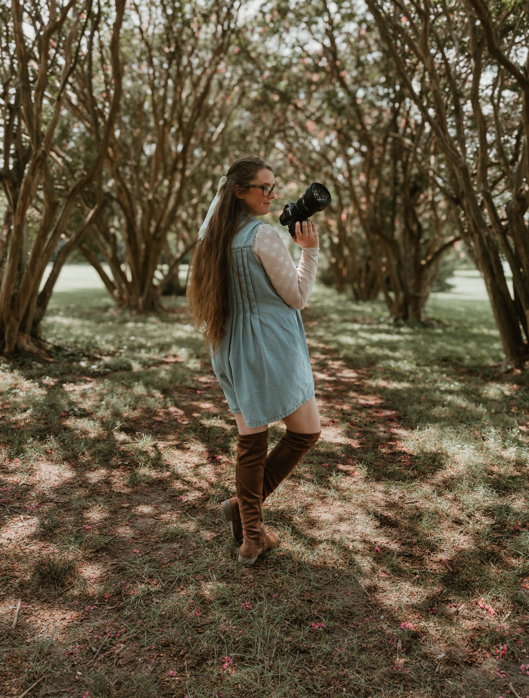

I'm so happy you're here.
I believe the ordinary moments are often the ones we treasure most.
My passion is capturing the real connection, love, and little details that make your family unique. From the anticipation of growing a tiny human, to the sweetness of newborn days, and the beautiful chaos of family life. My goal is to create images that help preseve these seasons for years to come and help tell your story.
It's more than just taking photos. I want your experience to feel relaxed, genuine, and full of joy.
I look forward to getting to know you and working with you.
No pressure for perfection. I want your family to genuinely just be yourselves and enjoy the moment.
Movement, laughter, cuddles, and genuine interactions are what make your images memorable. No stiff, forced poses. That's the beauty of lifestyle photography.
Your photographs become a reminder of the love and seasons God has blessed your family with.
© 2026 Grace & Olive Lens